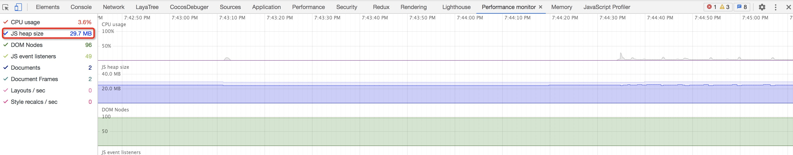
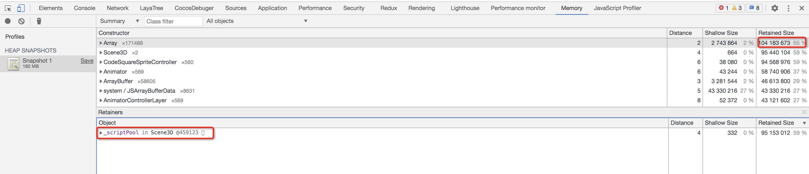
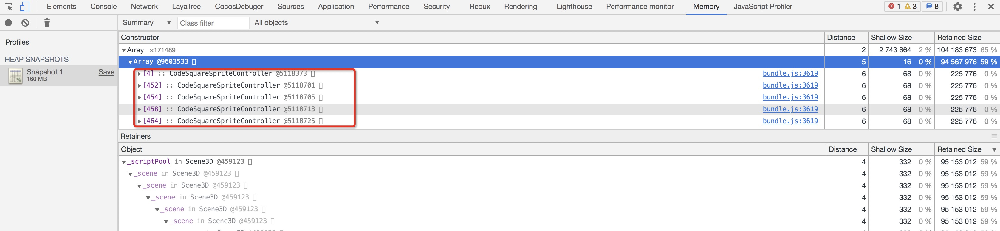

一次内存泄漏debug🤔
某个日常的工作日下午，我发现游戏项目内的Performance Monitor(码代码停顿的时候，会习惯性的看着这些"心电波动图"发呆)的JS heap以每秒1M的速度在增长， 因为之前做的业务从没有涉及到memory leak，所以这次debug的过程对我来说也算有趣。
 图1 当时应该是120M左右
于是我开始打memory的profile，定位到是LayaLib内的Scene3d类里面的一个对象池变量_scriptPool存在许多某个业务脚本类的实例。
 
游戏引擎的ECS架构下的脚本层通常都会有一个onEnable节点的生命周期函数，每添加一个node都会触发对应脚本的onEnable回调， 项目的需求就是不断创建不同的节点随机走动，于是我花了一部分时间在程序的调用栈上，看看是不是框架本身的bug， 结果发现是某一次工作日晚上重构导致的缓存代码丢失导致的问题。
看来单测不是一个坏主意，在晚上重构代码也不是一个好主意。